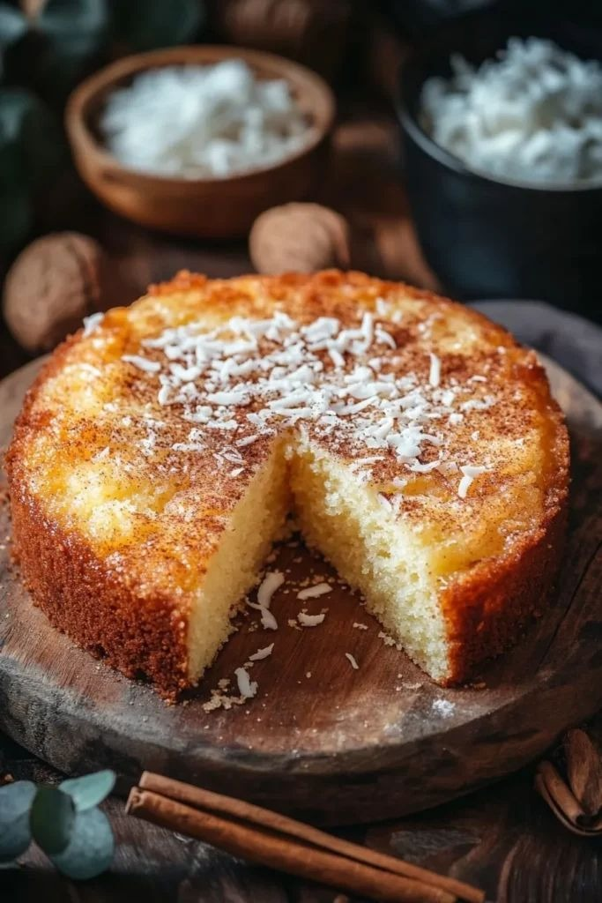
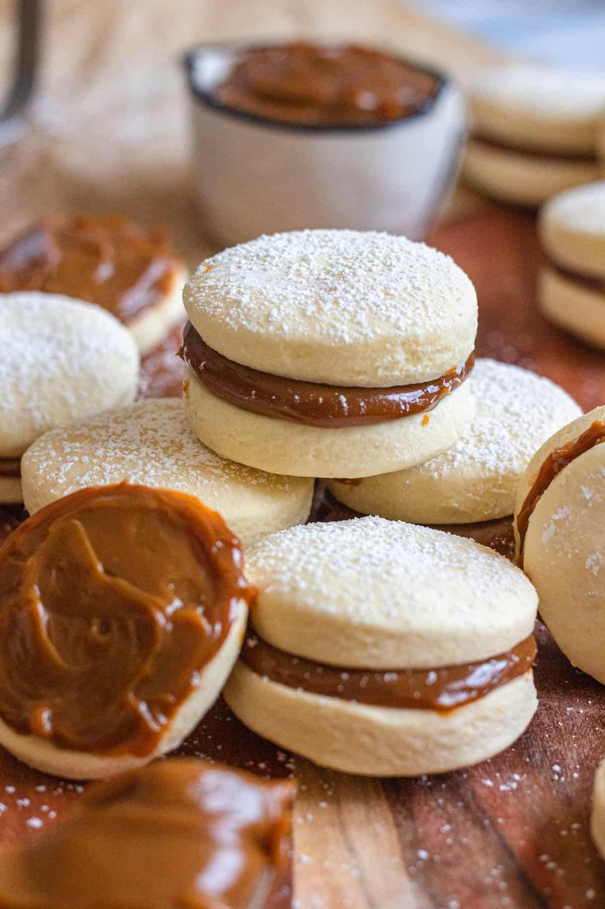
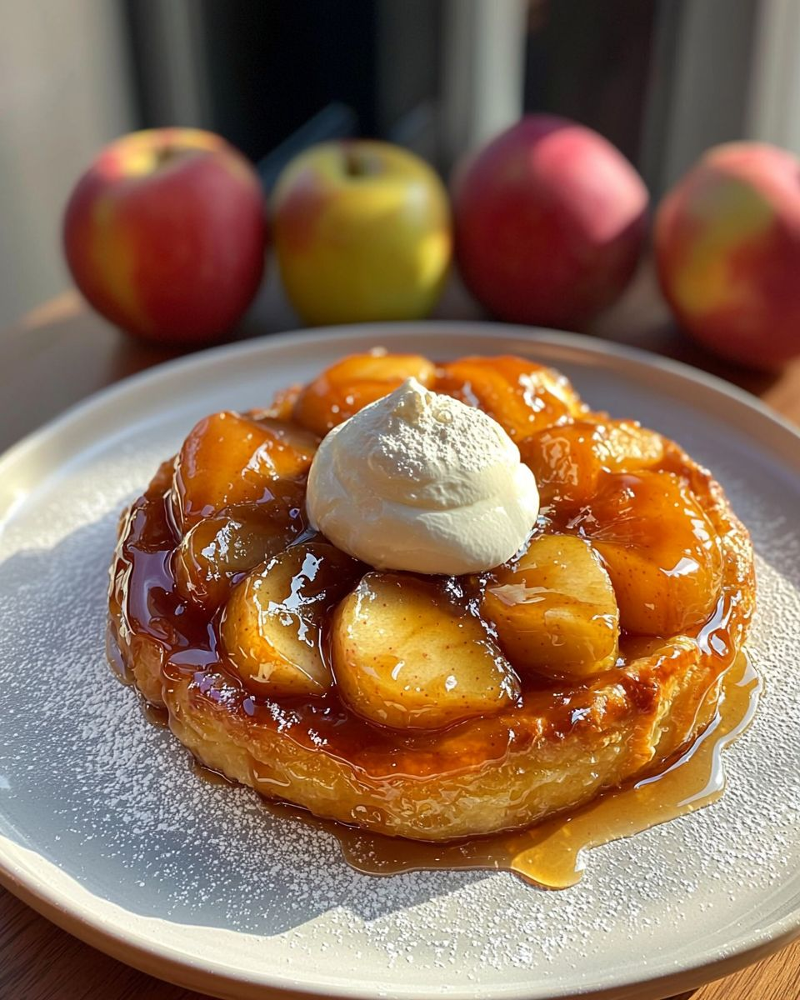
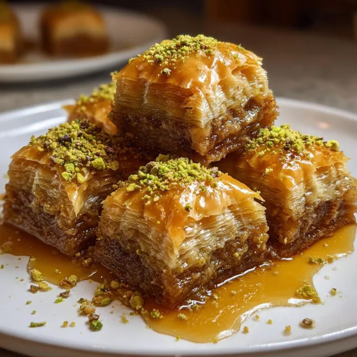

Enyucado

El alma del Caribe en un bocado. Una torta rústica y húmeda que fusiona la yuca rallada, el coco y el queso costeño, perfumada con un toque místico de anís.
Ir a RecetaAlfajores

El tesoro dulce del Sur. Delicadas galletas de maicena que se deshacen en la boca, unidas por un generoso corazón de dulce de leche y coronadas con lluvia de coco.
Ir a RecetaPavlova

Una nube de elegancia y contraste. Un merengue crujiente por fuera y cremoso por dentro, cubierto de nata montada y la vibrante frescura de las frutas ácidas.
Ir a RecetaTarta Tatin de Manzana

Un ícono francés de la "repostería al revés". Manzanas caramelizadas en mantequilla y azúcar sobre una base de hojaldre crujiente.
Ir a RecetaBaklava

Descubre la combinación perfecta entre lo crujiente y lo meloso. Este postre artesanal entrelaza finas láminas de hojaldre con una mezcla de nueces.
Ir a Receta